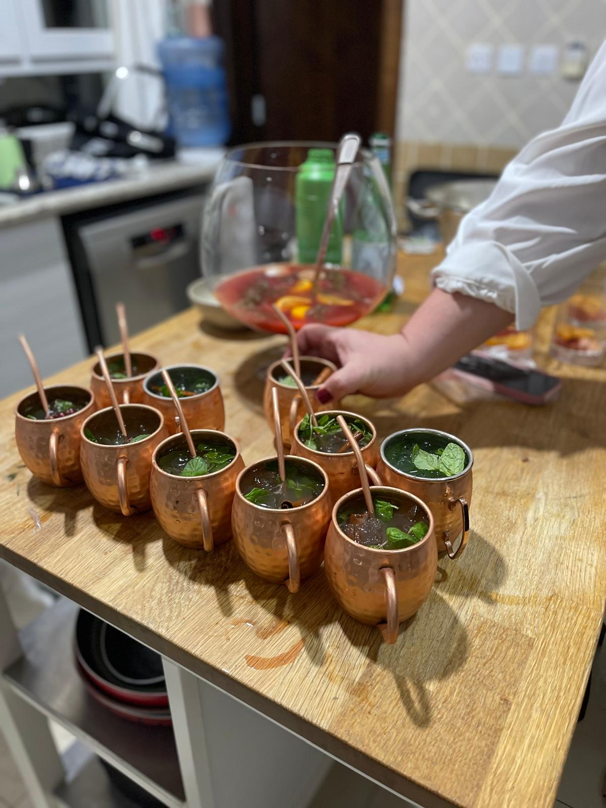

Reindeer Mule

Rudolph Goes to Russia
The classic Moscow Mule gets a holiday twist with cinnamon and cloves.
Tanya and Alan, Christmas 2025
Ingredients
- 2 oz vodka
- 1/2 oz fresh lime juice
- 3/4 oz cinnamon simple syrup (Recipe below)
- 2 dashes Angostura bitters
- top with dark, spiced ginger beer
- mint leaves
- cinnamon stick
- copper mugs for serving
Steps
- Fill copper mug with ice
- Add vodka, lime juice, and cinnamon syrup
- Top with ginger beer
- Add dashes of Angostura bitters
- Add several mint leaves
- Stir gently
- Garnish with cinnamon stick
Cinnamon Simple Syrup
- 1 cup water
- 1 cup sugar
- 3-4 cinnamon sticks
- 1 star anise
- 2 cloves
Steps
- Bring water and sugar to a simmer
- Add cinnamon sticks and spices
- Simmer 5 - 10 minutes
- Remove from heat, let steep for 20 more minutes
- Strain and bottle
Cinnamon simple syrup can be kept in the refrigerator for up to 2 weeks.
Return to home page